| 日付 | 2017年11月3日（金） |
|---|---|
| 山域 | 奥秩父 |
| メンバー | 家族（妻、長女・6歳、長男・4歳） |
| 山行形態 | 子連れ日帰り |
| アクセス | 車 |
| ルート (Map) | 焼山峠 (10:17) - (11:49) 小楢山 (12:37) - (13:06) 幕岩 (13:28) - (15:00) 焼山峠 |
3週連続、雨の週末の後の快晴予報の3連休。
本当は2泊3日でどこかに出かけたいのだが、
土曜日に娘の習い事があるため、日帰りの山に行くことにする。
目的地は10年振りの小楢山。あまりパッとした山ではないイメージがあるが、
手頃に登れる山のため、久々に訪れてみることにする。
焼山峠の駐車場に到着。標高1520m。
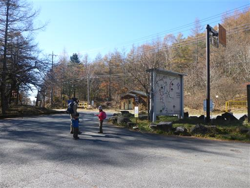
登山口からすぐのところに子授地蔵が並んでいる。
お地蔵様を１体持ち帰り、子を授かったら2体にしてお返しするようで、
今でも新しいお地蔵様が数多く見られるらしい。
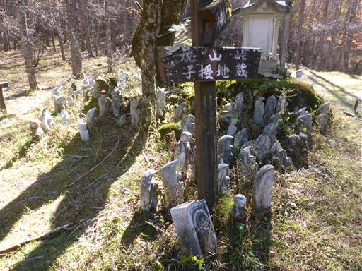
子供を抱いている地蔵も見られる。
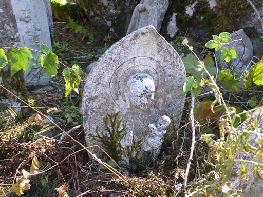
登山道は防火帯で非常に広い。
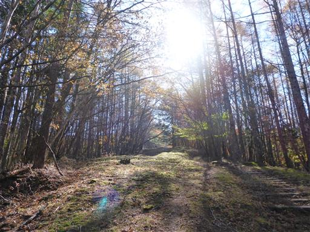
落ち葉がたくさん落ちている。もう紅葉はほとんどお終いだ。
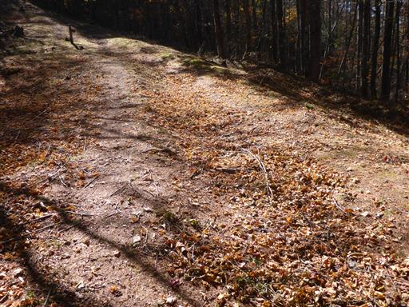
登山道は序盤から無駄にアップダウンがある。
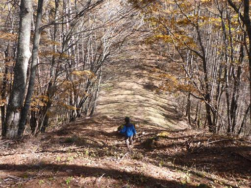
息子はカラマツの松ぼっくりがたくさん付いた枝を拾ってご満悦。
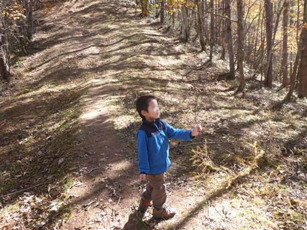
広い広い道は続く。傾斜は緩やかで非常に歩きやすい。
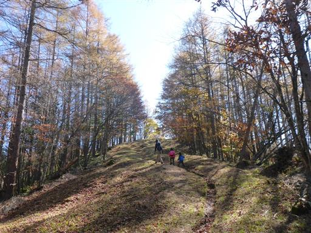
この辺りはまだ若干紅葉が残っている。
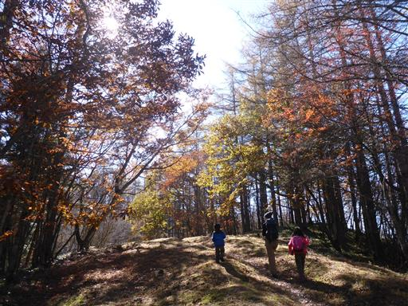
本日唯一の登りらしい登り。それも一瞬で終わる。
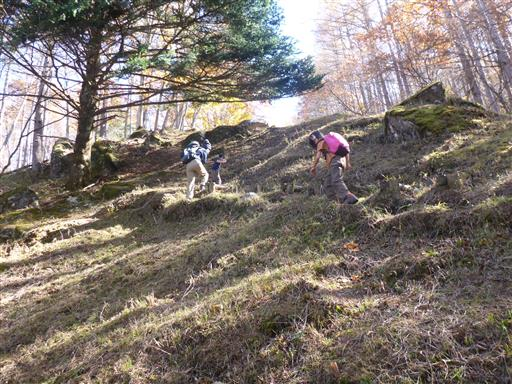
快晴の青空が気持ちよい。
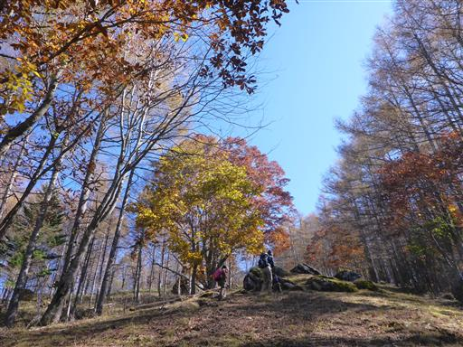
苔に覆われた大石。
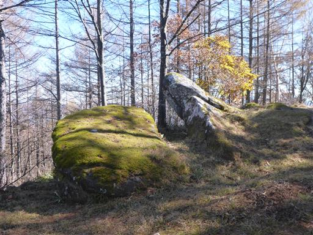
まるで広場のような空間。
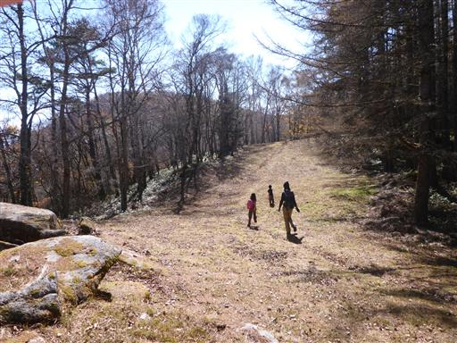
サルオガセ。山梨の山ではよく見かける。ここのサルオガセは小さめだ。
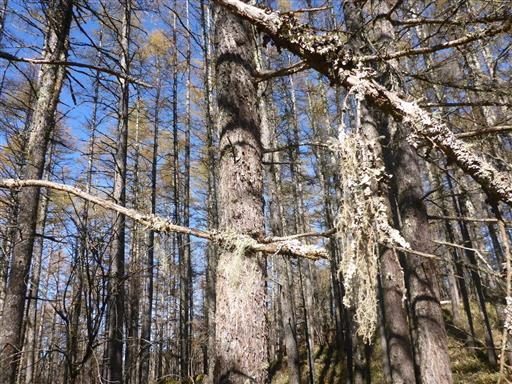
的石。きれいな形をした大きな石だ。
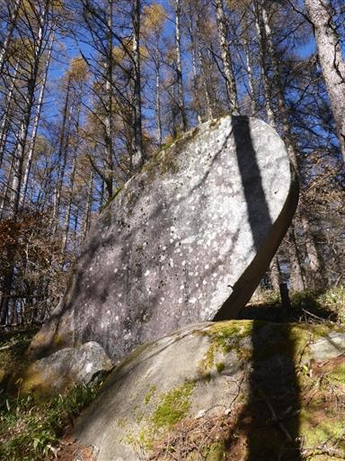
防火帯が終わって登山道は細くなる。この辺りは苔が美しい。
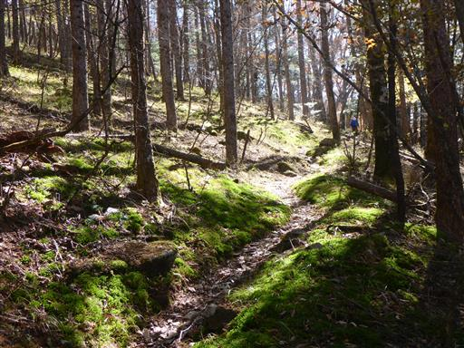
一杯水。水が湧き出してチョロチョロと流れている。
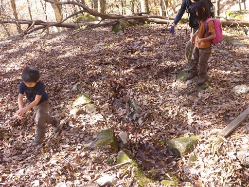
山頂近くになると傾斜はほとんどなくなる。周囲は秋色に染まっている。
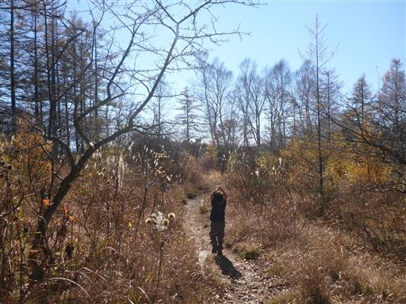
小楢山山頂に到着。標高1713m。
山頂に到着するとそのまま真正面に大展望が広がるというのは爽快だ。
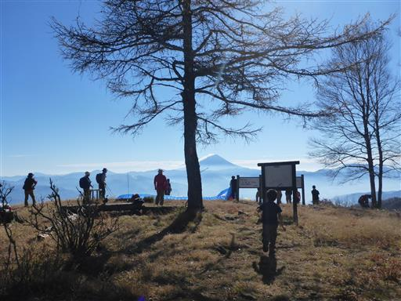
ここはパラグライダーの離陸場でちょうどテイクオフをしている。
気持ちよさそう～
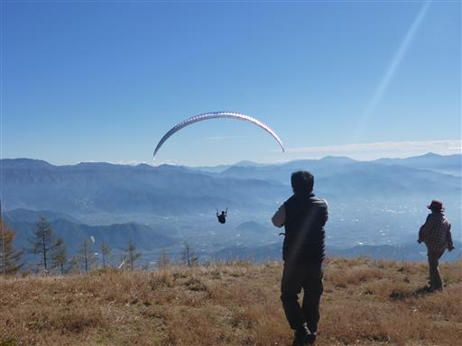
大展望の中で一番目立つのはやっぱり富士山。
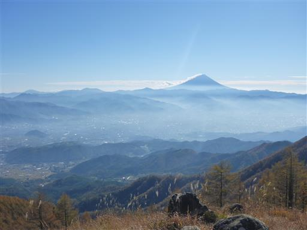
こちらは南アルプスの山々。
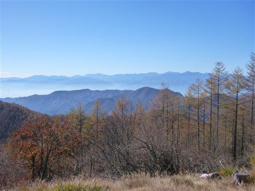
大菩薩嶺方面の山々。
少なくとも10年前に登った時の記録と記憶ではこんなに展望の良い山ではなかったはず。
恐らくパラグライダー離陸場のために木を切ったのだろう。
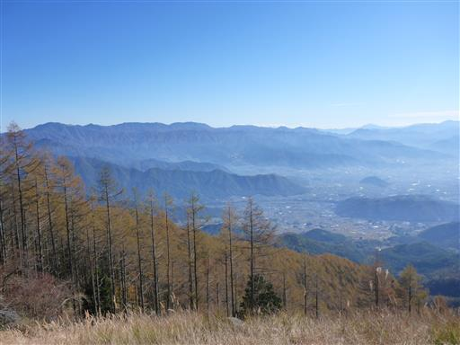
富士山を眺めながらおにぎりを食べる息子。
のように見えるが、実際は景色など目に入ってはいない。
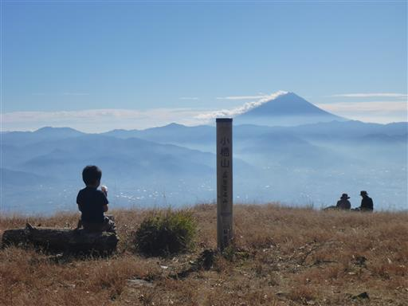
昼食休憩をとったら山頂を出発。
そのまま下山するのではなく、幕岩に寄り道することにする。
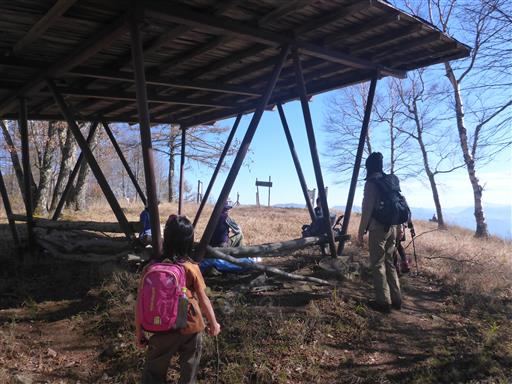
子供たちは珍しく手をつないで歩いている。
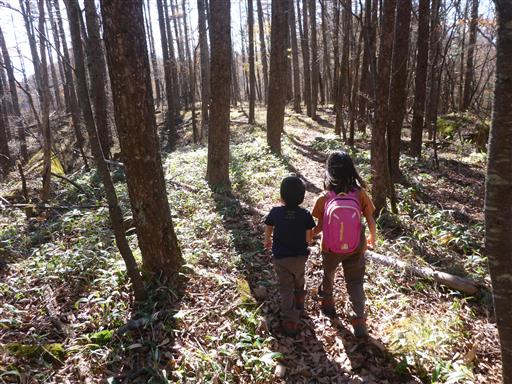
幕岩までは明瞭な尾根道が続いている。
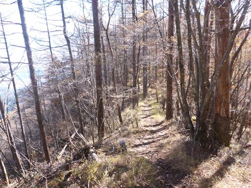
幕岩に到着。早速岩に登る。
案外難しい鎖場で、伊豆ヶ岳の鎖場よりも苦戦した。
子供と登って初めて岩場の難易度が分かる。
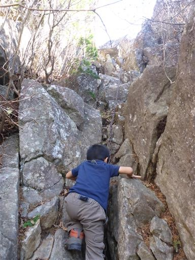
岩のトンネルを潜って息子は一足先に上部に到着。
周囲は崖なので、あまり動かないで！
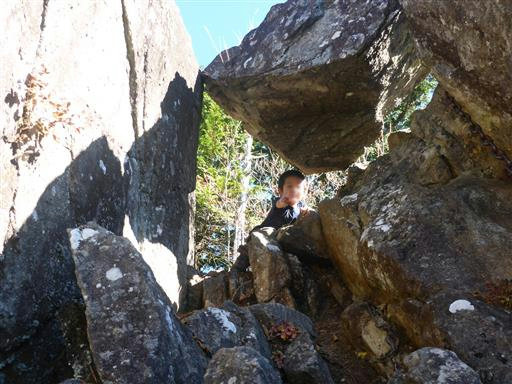
今度は岩のトンネルの上を通って、さらに岩の上を登って行く。
子連れだと結構怖い場所だ。
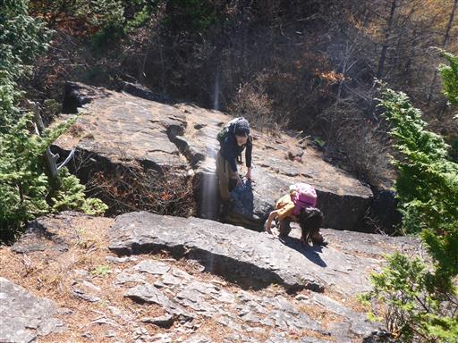
幕岩のてっぺんに到着。
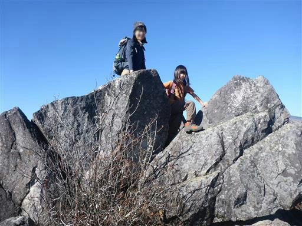
ここからの展望も素晴らしい。
目の前に見えるのは奥秩父の名峰、金峰山と国師ヶ岳だ。
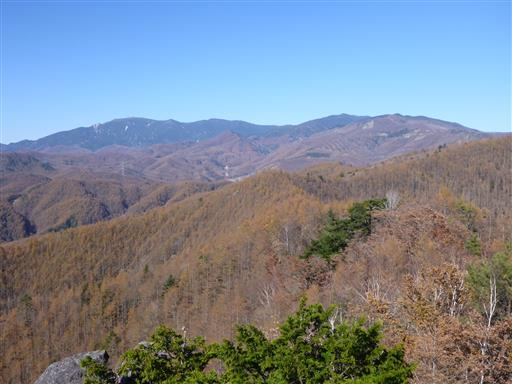
こちらは八ヶ岳。
素晴らしい展望の場所だが、子供たちがじっとしておらず落ち着かないため、
早々に下りることにする。
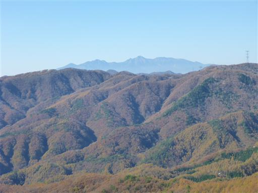
岩を下りる。息子も娘も岩は楽しいようだ。
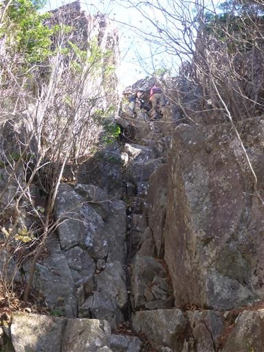
赤い実が大量に落ちている。何の実だろうか？
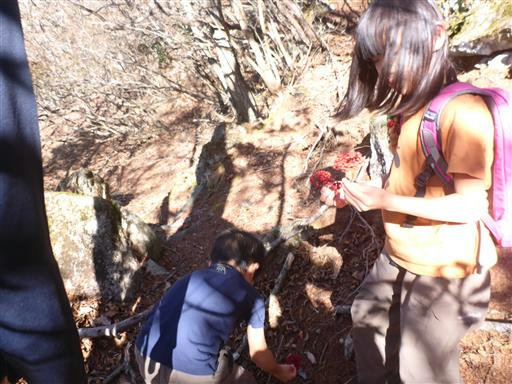
登山道の分岐点。小楢山の山頂はスキップして巻道を選択。
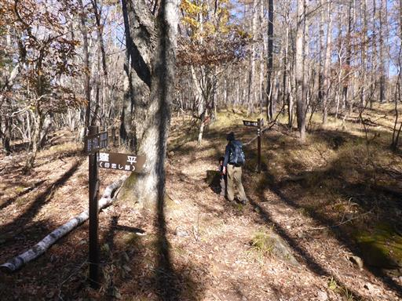
途中で新道と旧道の分岐点に到着する。
登りでは新道を使ったため、下りでは旧道を使うことにする。
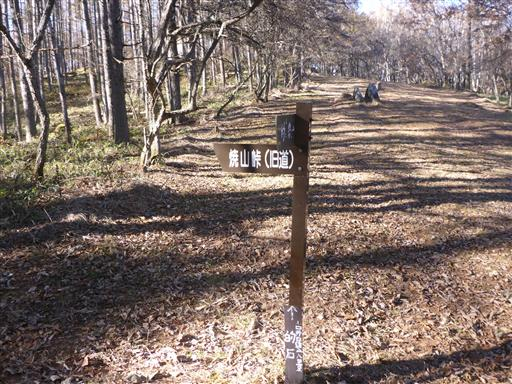
旧道はシダが多い。
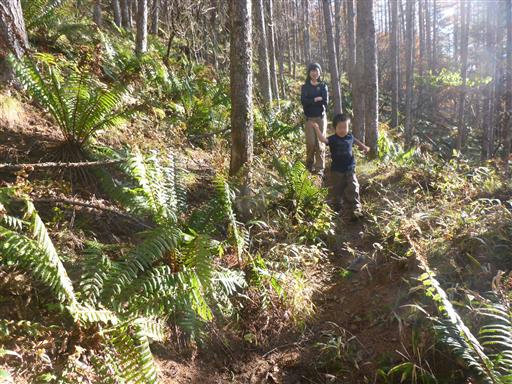
再び登山道は合流。あとは防火帯の広い道を下っていくのみだ。

登りの時は樹液がしみ出しているだけだったのが、下山時に見ると樹液が流れ落ちている。
いつ切られた木なのだろうか？
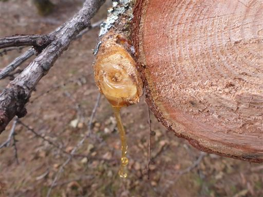
無事、焼山峠に戻ってくる。
思いの外、大展望が楽しめた山行だった。
伊豆ヶ岳に引き続き鎖場も経験でき、子供たちも楽しめたようで良かった。
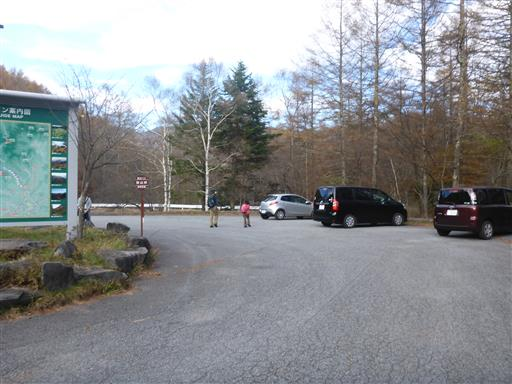